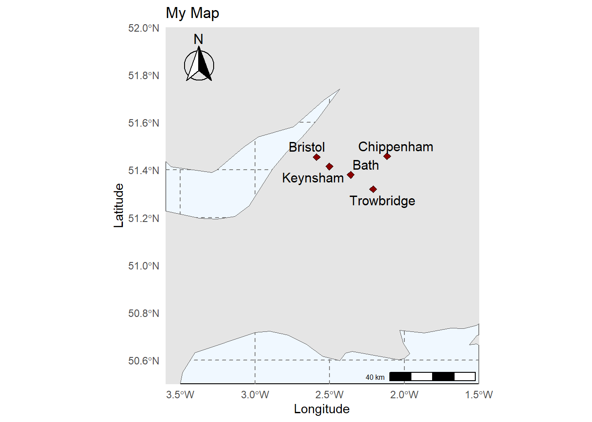

Creating Interactive Maps with R: A Beginner’s Guide Using ggplot2 and leaflet
R
R Tutorial
Maps
ggplot
leaflet
tidyverse
environmental monitoring
Author
Kishore Kumar Jagadeesan
Published
July 11, 2024
TL;DR
In this tutorial, you’ll learn how to create static maps using ggplot2 and interactive maps using leaflet in R. We’ll cover the basics, provide code examples, and include tips and troubleshooting advice. By the end, you’ll be able to create customized maps to visualize geographic data effectively.
Welcome to this step-by-step tutorial where you’ll learn how to create beautiful and interactive maps using R. We’ll be using two powerful R packages: ggplot2 for static maps and leaflet for interactive maps. Whether you’re a beginner or looking to refine your mapping skills, this guide will walk you through the basics and provide some handy tips and tricks along the way.
Introduction
Mapping is a crucial part of data visualization, helping to present geographic data in an easily understandable way. In this tutorial, we will:
Create a static map using ggplot2.
Create an interactive map using leaflet.
By the end of this guide, you will have a good understanding of how to create and customize maps in R.
When to Use Which
ggplot2: Ideal for static visualizations and publication-quality maps.
leaflet: Perfect for interactive and dynamic maps that engage users.
Prerequisites
Ensure you have R and RStudio installed on your computer. You will also need to install the necessary packages.
Load the rnaturalearth package to access natural earth map data.
4
Load the rnaturalearthdata package for additional natural earth data.
5
Load the sf package for handling spatial data.
Step 2: Load the Data
For this tutorial, we’ll use the rnaturalearth package, which provides natural earth vector map data in various scales. We’ll load world map data using this package.
Once the final map is prepared, it can be conveniently saved in various formats using the ggsave() function. The formats include the widely used PNG (a raster bitmap) and PDF (vector graphics), with the ability to control the size and resolution of the output. In this case, we are saving a PDF version of the map, which maintains the highest quality, and a PNG version for web usage
If you’re creating a PDF for web use, a dpi of 72 is usually sufficient. If you’re creating a PDF for print, a dpi of 300 or higher is recommended. If you’re not sure what dpi to use, it’s best to check with your printer or the specifications of the website where you plan to upload the PDF.
Customizing the Static Map
Adding additional layers: An Example with Points
To make your static map more informative and visually appealing, you can add additional layers such as points representing specific locations. Here’s how to do it step-by-step.
Step 1: Create a Data Frame with Location Data
First, create a data frame containing the locations you want to plot on the map.
Add multiple markers at specified longitudes and latitudes.
4
Add custom popup messages for each marker.
5
Display the map.
Additional Customizations
Advanced ggplot2 Features
To enhance your static maps further, you can customize themes, add annotations, and use scale transformations. These advanced features can make your map more informative and visually appealing.
Load the ggspatial package for spatial annotations.
2
Load the ggrepel package for repelling text labels.
3
Create a ggplot object using world_map data.
4
Plot the geographic features using geom_sf.
5
Add points from sites data with longitude and latitude, customized size, shape, and fill colour.
6
Add repelled text labels for city names using ggrepel.
7
Apply a minimal theme to the plot.
8
Add title and axis labels.
9
Set the spatial coordinates to focus.
10
Customize the major grid lines.
11
Set the background colour to aliceblue.
12
Add a north arrow annotation at the top left of the plot.
13
Add a scale bar annotation at the bottom right of the plot.
14
Display the map.

Advanced leaflet Features
For interactive maps, leaflet offers advanced features that allow you to add layers, custom controls, and integrate with other web technologies.
Polygons and Circles
Use addPolygons() and addCircles() to highlight specific areas on your map.
Code
leaflet_map <- leaflet::leaflet() %>% leaflet::addTiles() %>% leaflet::addMarkers(lng =-0.09, lat =51.505, popup ="Hello, London!") %>% leaflet::addCircles(lng =-0.1, lat =51.51, weight =1, radius =50,popup ="Circle around another location")leaflet_map
1
Initialize a leaflet map object.
2
Add default OpenStreetMap tiles to the map.
3
Add a marker at the specified longitude and latitude with a popup message.
4
Add a circle at the specified longitude and latitude with a specified weight and radius.
5
Add a popup message for the circle.
6
Display the map.
These advanced features in ggplot2 and leaflet enable you to create detailed, informative, and visually appealing maps, whether they are static or interactive. By leveraging these tools, you can effectively communicate geographic data to your audience.
Common Mistakes
When creating maps in R, there are a few common mistakes that can lead to errors or unexpected results. Here are some tips to help you avoid these pitfalls:
Wrong Coordinates: Ensure your longitude and latitude values are correct; otherwise, your markers will not appear where expected.
Missing Libraries: Always load the necessary libraries before running your code.
Incorrect Data Types: Make sure your longitude and latitude columns are numeric. If they are factors or characters, convert them using as.numeric().
Mismatched Coordinate Reference Systems (CRS): Ensure your spatial data and map layers use the same CRS to avoid misalignment.
Overlapping Layers: Be careful with the order of layers in ggplot2. Layers added later will be on top of earlier ones, which might obscure important data.
Improper Aesthetics Mapping: Double-check that the aes() function correctly maps your data columns to aesthetics in ggplot2.
Forgetting to Print the Plot: In scripts or R Markdown documents, ensure you explicitly print the ggplot object to render the plot.
Large Data Sets: For very large spatial data sets, rendering can be slow. Consider simplifying your data or using more efficient packages like sf.
Incorrect File Paths: When loading spatial data from files, ensure the file paths are correct and the files are accessible.
Not Saving Plots: If you want to save your plots, use functions like ggsave() for ggplot2 maps and htmlwidgets::saveWidget() for leaflet maps.
Troubleshooting
When things go wrong, here are some troubleshooting tips to help you diagnose and fix common issues:
Error: Object not found: Ensure all objects (e.g., data frames, variables) are defined in your environment.
Map not displaying: Check your longitude and latitude values and ensure your map container is correctly set up if embedding in a Shiny app or R Markdown document.
Incorrect CRS: If your spatial data doesn’t align, check and transform CRS using functions like st_transform() from the sf package.
Slow Performance: If rendering is slow, consider reducing the complexity of your spatial data, using faster algorithms, or rendering smaller sections of the map.
Layer Ordering Issues: If some layers are hidden, reorder your ggplot2 layers to ensure that important data is not obscured.
Library Conflicts: Sometimes, functions from different libraries can conflict. Ensure you are calling functions with the correct namespace (e.g., ggplot2::geom_point()).
Missing Data: Check for NA values in your data, especially in critical columns like longitude and latitude. Handle missing data appropriately.
Plot Size: If your plot appears squished or improperly scaled, adjust the plot dimensions using ggsave() or fig.width and fig.height in R Markdown.
Browser Compatibility: For leaflet maps, ensure you are using a compatible web browser, and try refreshing the page if the map does not load.
Dependency Issues: Make sure all necessary packages and their dependencies are installed and up to date. Use install.packages() to install missing packages.
Resource Limits: For interactive maps, ensure your system has sufficient resources (memory, processing power) to handle large datasets and complex visualizations.
FAQs
Q: Can I save my interactive map as an HTML file?
A: Yes, use the saveWidget() function from the htmlwidgets package.
Creating maps in R is a valuable skill for data visualization. With ggplot2, you can make static maps, and with leaflet, you can create interactive maps that provide a more engaging user experience. Experiment with different features and customization options to make your maps stand out. Happy mapping!
![]()